摘要
金融欺诈是金融行业中一个长期存在的问题，可能对个人、企业和整个经济造成严重后果。图神经网络 （GNN）是一类为图数据结构设计的深度学习模型，图由结点以及连接结点的边构成。由于 GNN 能够 分析金融交易的网络结构，捕获传统基于规则的方法与机器学习方法可能漏掉的模式与异常，它已经成为 在复杂金融系统中检测欺诈活动的有力工具。
本系统综述的目标是：全面梳理当前使用图神经网络（GNN）进行金融欺诈检测的最新技术水平， 识别现有研究中的缺口与局限，并提出未来研究的可能方向。
我们检索了五个学术数据库，包括 Web of Science、Scopus、IEEE Xplore、ACM 和 ScienceDirect， 使用与图神经网络、金融领域和异常检测相关的特定关键词与检索式来识别相关文献，共得到 388 篇 去重后的文章。我们依据纳入标准、排除标准和质量评估标准筛选相关文献，最终有 33 篇文章被纳入 综述。此外，我们还使用前向滚雪球（forward snowballing）来识别初始检索未能捕获的相关论文。 我们从入选文章中提取数据，随后加以分析、归纳，以识别文献的当前状态、缺口与趋势。
我们的综述提出了一种用于金融欺诈检测的 GNN 新分类体系，并指出了该领域潜在的研究方向。我们 发现，应用于金融欺诈检测的 GNN 大多以监督或半监督方式使用，对无监督方法的探索有限。除金融 领域之外，我们还考察了同构、异质、静态、时序与动态等不同类型的图，并研究了各种学习机制与 异常类型。我们还注意到，金融领域中常用的边级与图级异常检测研究存在缺失。
关键词 图神经网络 · 异常检测 · 金融欺诈检测 · 图表示学习 · GNN
本文译自 Expert Systems With Applications 第 240 卷（2024 年）第 122156 号， DOI https://doi.org/10.1016/j.eswa.2023.122156。 原作 Financial fraud detection using graph neural networks: a systematic review，作者为 Soroor Motie 与 Bijan Raahemi （渥太华大学 Telfer 管理学院知识发现与数据挖掘实验室）。 按项目约定，作者名单、作者单位、参考文献与致谢均保持原文，未作翻译。 原文于 2023 年 6 月 14 日收稿，2023 年 9 月 25 日修回，2023 年 10 月 12 日录用。
1 引言
近年来，金融行业交易量与交易复杂度显著上升，欺诈活动随之激增。金融欺诈检测已成为企业、 监管机构与消费者共同关注的关键问题（Abdallah, Maarof, and Zainal, 2016）。欺诈活动近期的 增长凸显了有效欺诈检测的迫切需求。根据 CAFC（加拿大反欺诈中心）的报告，2022 年记录的欺诈 报案超过 91,190 起，其中 57,055 名受害者损失总额超过 5.31 亿美元。这说明金融欺诈可能造成 巨额资金损失，并侵蚀人们对金融机构与金融体系的信任。欺诈检测有助于阻止以非法或欺骗性手段 谋取财务利益的未授权行为。
欺诈检测系统旨在发现系统中的欺诈活动，并通过各种技术向系统管理员报告。传统的基于规则的 系统与经典机器学习技术已被用于欺诈检测（Hilal, Gadsden, and Yawney 2022）；然而，面对 日益复杂的欺诈模式与海量数据，它们存在局限。另一方面，深度学习模型凭借从原始数据中学习 复杂特征与表示的能力，在计算机视觉、自然语言处理和语音识别等多个领域展现出卓越性能。这使 深度学习成为金融欺诈检测中颇具吸引力的一条路径。
传统的欺诈检测方法主要依赖人工编写的规则或特征工程，这需要领域专业知识，且开发与维护都 相当耗时。此外，这类方法往往缺乏适应性，难以应对金融欺诈不断演变的特性。经典机器学习技术， 如逻辑回归、支持向量机和决策树，也被用于欺诈检测（Hilal et al., 2022）。尽管这些方法取得 了一些成效，但它们难以处理金融欺诈检测中常见的高维数据、非线性关系和复杂模式。
深度学习模型，尤其是神经网络，为金融欺诈检测提供了一条有前景的替代路径，因为它们能够自动 从原始数据中学习复杂模式与表示。这消除了人工特征工程的需要——既耗时又高度依赖领域知识。 此外，深度学习模型能够处理高维数据并对非线性关系建模，因而非常适合识别那些暗示欺诈活动的 细微、隐蔽的模式。已有多种深度学习架构被应用于金融欺诈检测，包括前馈神经网络、循环神经网络 （RNN）、卷积神经网络（CNN）（Hilal et al., 2022）以及图神经网络（GNN）。这些模型已被应用 于信用卡欺诈、保险和洗钱等多个金融领域。事实证明，深度学习模型在准确率、适应性和可扩展性上 都优于传统方法。
过去十年间，得益于图神经网络（GNN）与图表示学习的重大进展，基于图的欺诈检测日益受到重视 （Niepert, Ahmed, and Kutzkov, 2016; Hamilton, Ying, and Leskovec, 2017）。图神经网络所应用的 表示学习，是把结点或（子）图映射／嵌入到一个低维向量空间中，从而在结点、边、子图或整图等 不同层级上检测异常。在金融领域，GNN 可用于对客户、交易与商户之间的关系建模，并通过训练 识别洗钱、信用卡欺诈等欺诈活动的模式。
金融欺诈检测中使用的图通常由表示账户与交易的结点和边构成。每个结点代表一个金融账户，例如 银行账户、信用卡账户或参与交易的其他金融实体。结点可以带有关联属性，如账户类型、交易历史、 账户余额、账户持有人信息，或其他与欺诈检测任务相关的元数据。每条边代表两个账户之间的一笔 金融交易。边的方向指示交易方向（例如从某个账户流向另一个账户）。边可以带有权重，表示交易 金额或其他定量信息（例如交易时间戳）。
通过使用消息传递算法在相连结点之间传播信息，GNN 可以学到既刻画图结构、又刻画结点间关系的 表示。当 GNN 处理金融交易图并学习结点嵌入时，它会同时基于所学到的表示与模式，为每个账户或 每笔交易计算欺诈分数。这些欺诈分数量化了某个账户或某笔交易卷入欺诈活动的可能性。GNN 对计算 出的欺诈分数施加阈值，以区分正常实例与可疑实例。欺诈分数高于某一阈值的账户或交易被视为可疑， 并被标记出来供进一步调查。阈值可以依据领域知识、欺诈分数的分布来确定，也可以通过优化假阳性 与假阴性之间合适的权衡来确定。GNN 的自动检测与人类分析师的专业判断相互配合，确保了欺诈检测 系统的稳健与高效，帮助金融机构主动打击金融欺诈。
从数据类型来看，交易数据和文本数据历来被用于欺诈检测（Ahmed, Mahmood, and Islam, 2016）。 然而，把数据局限在文本和交易数据上的弊端在于：无法察觉网络中实体之间的关系。相比之下，图 （Akoglu, Tong, and Koutra, 2015）作为结点（例如客户）与边（例如资金交易）的集合，能够通过 对每个结点不仅影响其邻居、而且影响整个网络这一事实建模，检测出结构性欺诈。
本研究对使用图神经网络和图表示学习进行金融欺诈检测的文献做了全面综述。本综述的范围划分为 三个不同维度：数据类型、方法和应用。从数据类型角度看，所评述的论文主要涉及图数据，侧重于 图表示而非文本或交易数据；不过，有些论文可能包含多元模态数据，其中含有图表示。在方法上， 范围仅限于图神经网络与图表示学习方法，其他机器学习与深度学习方法不予纳入。在应用上，本 综述只聚焦税务、银行、保险、在线支付交易和加密货币等领域的金融欺诈；计算机网络欺诈或电信 欺诈等其他形式的欺诈不在本综述范围之内。
据我们所知，目前尚无专门探讨使用图神经网络进行金融欺诈检测的系统性文献综述。尽管近期已有 研究分别综述过金融欺诈检测技术与图异常检测，但还没有研究把这两块结合起来，评述如何使用 图神经网络进行图异常检测以服务金融欺诈检测。
例如，（Ma et al., 2021）对基于深度学习方法的图异常检测做了全面综述，但并未专门关注图神经 网络（GNN）。（Kim et al., 2022）分析了使用 GNN 进行图异常检测的现状与挑战，但没有研究其在 金融领域的应用。另一方面，聚焦金融欺诈检测的综述，如（Cherif et al., 2023; Hilal et al., 2022; Zhu et al., 2021）所做的工作，广泛考察了各种技术，但并未专门提及 GNN 的使用。表 1 给出 了现有异常检测综述之间的比较。
实践者与研究者可以把本系统综述当作一份全面资料，用以理解图神经网络（GNN）应用于金融欺诈 检测的当前技术水平。此外，本综述识别出了文献中的缺口，可以为该领域的未来研究提供指引。 对于希望在使用图进行金融欺诈检测时改进方法选择决策、并设计新的基于 GNN 的方法以弥补所识别 研究缺口的实践者与研究者而言，本综述都可资参考。
本系统综述的主要贡献如下：
- 提出新的分类体系：我们提出了一种面向静态图的图神经网络新分类体系。图神经网络被划分为 四类：基于卷积的图神经网络、基于注意力的图神经网络、基于元路径的图神经网络，以及基于 Transformer 的图神经网络。
- 识别相关资源：我们汇集了大量图神经网络资源，包括最先进模型、基准数据集、开源代码和 金融应用。本综述可作为理解、使用和开发面向各类真实金融应用的不同 GNN 的参考。
- 识别未来方向：我们指出了在使用图神经网络进行金融欺诈检测这一领域中仍需更多研究的方面。 通过识别当前研究中的缺口与局限，我们可以提出未来研究的可能方向，以改进 GNN 在检测金融 欺诈中的性能与适用性。
本文其余部分按如下五个章节组织：第 2 节讨论与图神经网络学习方法相关的基础知识以及若干预备 定义。第 3 节深入描述本次系统综述，包括研究问题的定义、原始研究的筛选、来源数据库、检索式、 排除与纳入标准以及质量评估标准；该节还包含检索结果与 PRISMA 分析结果。第 4 节给出综述的 数据综合结果，包括两个研究问题的答案。最后，第 5 节讨论本研究的局限与有效性威胁。更多信息 见附录。
| 综述 | 图欺诈检测 | 深度学习 | 金融欺诈检测 | 图神经网络 |
|---|---|---|---|---|
| 本综述 | ✓ | ✓ | ✓ | ✓ |
| (Hilal et al., 2022) | ✓ | ✓ | ||
| (Kim et al., 2022) | ✓ | ✓ | ✓ | |
| (Yang et al., 2022) | ✓ | ✓ | ||
| (Yildiz et al., 2022) | ✓ | ✓ | ||
| (Ma et al., 2021) | ✓ | ✓ | ✓ | |
| (Zhu et al., 2022) | ✓ | ✓ | ✓ | |
| (Akoglu et al., 2015b) | ✓ | ✓ |
2 背景
这里我们先介绍理解本文后续章节所必需的基本定义，随后更深入地讨论图神经网络，以便更清晰地 把握这一主题。
定义 1（图） 图是结点与边的集合，可表示为 ， 其中 表示图， 是结点（顶点）集合，， 是结点之间边（连接）的集合，。 是一个 矩阵，表示结点特征 （ 为结点特征向量的维数）； 是一个 矩阵，表示边特征 （ 为边特征向量的维数）。矩阵 的每一行对应一个结点的特征向量， 矩阵 的每一行对应连接一对结点的某条边的特征向量。需要注意，在本综述中， “静态”图与“同构”图同“图”这一定义相同。
定义 2（异质图） 异质图包含多种结点类型与边类型。在异质图中，存在结点类型映射函数 与边类型映射函数 ，其中 与 分别表示结点类型集合与边类型集合。 异质图可记作 ， 其中 是异质静态图， 与 的含义同图中一致， 与 分别表示异质情境下的结点特征与边特征。
定义 3（时序图） 时序图是结点特征或边特征随时间变化的图。时序图可表示为 ， 其中 表示 时刻的图， 与 的含义同图的定义一致， 是一个 矩阵，表示 时刻的结点特征； 是一个 矩阵， 表示 时刻的边特征。
定义 4（动态图） 动态图是结点与边的存在与特定时间区间相关联的图。在数学上，动态图可记作 ， 其中 是动态图， 表示结点集合， 表示边集合。在这一表示中， 是图的一个顶点， 与 分别是该顶点存在的起止时间戳，且 。类似地， 与 是 中的顶点， 与 分别是该边存在的 起止时间戳，且 。 图神经网络（GNN）是为图数据集上的机器学习任务而设计的一类神经网络变体。GNN 的目标是为每个 结点 学习一个嵌入 ， 然后利用该嵌入估计合适的输出，例如结点类别，或回归任务中的连续值。
GNN 的传播公式可以用消息传递框架做更抽象的表述。该框架包含两个主要步骤：消息传递与聚合。 传播公式可以拆解为以下几个阶段：
消息传递 为每个结点-边对 计算消息，其中 是图中边的集合。消息函数 以源结点隐状态 、目标结点隐状态 以及可能的边特征 为输入，生成一条消息：
聚合 在每个目标结点 处，把所有邻居结点发来的消息聚合起来。聚合函数 把来自邻居 的消息合并为 一条聚合消息：
更新 聚合消息 被用于更新目标结点 的隐状态。更新函数 以结点当前隐状态 与聚合消息 为输入，生成更新后的隐状态：
以上步骤按预先设定的迭代次数 重复，如图 1 所示，从而使 GNN 能够捕获图中 更远结点传来的信息。通过定义不同的消息函数 、聚合函数 与 更新函数 ，可以构造出各种 GNN 架构（Xu et al., 2019）。图卷积网络（GCN）与 GraphSAGE 等许多流行 GNN 架构，都可以通过指定合适的 、、 函数，在这一消息传递框架下表达出来。
进一步说，GNN 已被证明在监督与无监督设置下都能有效求解各类任务，例如结点分类、边分类和图 分类。在欺诈检测情境中，本综述所评述的多数论文聚焦结点分类任务，但也有一些研究利用 GNN 做 边分类（Ye et al., 2022）。
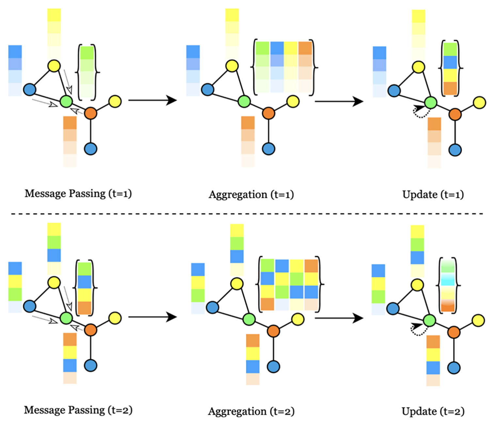
结点分类 给定一个带结点特征 的图 ，以及每个结点 的目标标签 ， 结点分类的目标是依据生成的嵌入预测每个结点的标签 。 从 GNN 得到结点嵌入 之后，施加一个分类器函数 来预测目标标签（Cai, Zheng, and Chang, 2018）。
该分类器可以是简单的线性变换后接 SoftMax 激活（用于多分类），或后接 sigmoid 激活（用于二分类）。
边分类 给定一个带结点特征 的图 ，以及每条边 的目标标签 ，边分类的目标是依据相连结点 生成的嵌入预测每条边的标签 。 从 GNN 得到结点嵌入 与 之后，施加一个边表示函数 来计算边嵌入（Cai et al., 2018）。
可以采用多种方法，例如拼接、逐元素相加或逐元素相乘。得到边嵌入 之后，施加分类器函数 来预测目标标签：
与结点分类类似，该分类器可以是线性变换后接 SoftMax 或 sigmoid 激活。
图分类 给定一个图数据集 ， 带有结点特征 以及每个图 的目标标签 ，图分类的目标是依据生成的嵌入预测每个图的 标签 。在每个图中所有结点都得到结点嵌入 之后，施加一个图级聚合函数 来计算图嵌入：
可以采用多种方法，例如求和、均值、最大值或基于 注意力的聚合。得到图嵌入 之后，施加分类器函数 来预测目标标签（Z. Zhang, Cui, and Zhu, 2022）：
与结点分类和边分类类似，该分类器可以是线性变换后接 SoftMax 或 sigmoid 激活。
这些形式化为使用 GNN 定义结点、边和图分类任务提供了一般性的指引。不同的 GNN 架构，以及 对聚合、表示与分类器函数的不同具体选择，可以为每类任务导出一大批模型变体。
3 方法
遵循 Kitchenham 的方法（Kitchenham, 2004），我们首先定义研究问题，以确定使用图神经网络进行 金融欺诈检测的研究现状。随后，我们使用预先确定的纳入与排除标准检索并筛选相关的原始研究。 我们从每项研究中提取数据，并进行元分析来综合结果、识别文献中的趋势与缺口。据此，我们的 方法由以下四个关键步骤组成：
- A. 定义研究问题
- B. 筛选原始研究
- C. 数据提取
- D. 元分析
3.1 研究问题的定义
本研究试图回答以下问题：
RQ1：针对金融交易中的异常检测，研究者提出了哪些类型的图神经网络（GNN）？
RQ2：在使用图神经网络进行金融欺诈检测这一领域，当前的趋势、缺口与未来研究方向是什么？
第一个问题帮助我们梳理与分析不同金融领域中最先进的图神经网络技术。第二个问题引导我们识别 研究的趋势、现有研究中的缺口，以及该领域研究的未来方向。
3.2 原始研究的筛选
研究的第一步是在五个主流数据库（Web of Science、Scopus、IEEE Xplore、ACM 和 ScienceDirect） 上用预先定义的检索式进行自动化数据库检索，以识别使用图神经网络与图表示学习进行金融欺诈 检测的相关研究。先去除重复记录，再进行标题与摘要筛选，随后进行全文评审，以进一步剔除不相关 的文章。此外，检索策略还包括前向滚雪球（forward snowballing）——查看引用了已纳入论文的 文献。滚雪球涉及一级前向链式追踪，即追踪较新论文中的引用。
3.2.1 来源数据库
我们的检索字符串在五个成熟数据库中执行，灰色文献来源不纳入检索。
- Scopus，https://www.scopus.com/
- Web of Science，https://www.webofknowledge.com/
- IEEE Xplore，https://www.ieeexplore.ieee.org/
- ACM Digital Library，https://dl.acm.org/
- ScienceDirect，https://www.sciencedirect.com/
Scopus、Web of Science、IEEE Xplore 和 ACM Digital Library 是计算机科学与工程领域使用最广泛、 最具声望的学术数据库之列。此外，这些数据库提供高级检索功能，能够精确、有针对性地检索出与 研究问题相关的文章。诚然，ScienceDirect 的检索选项可能不如其他数据库强大，但根据以往经验， 有少数相关论文只在 ScienceDirect 上发表。因此，为确保文献综述的全面性，把 ScienceDirect 纳入检索是重要的。
3.2.2 摘要检索式
本综述旨在全面评述图神经网络在面向金融欺诈检测的异常检测中的应用。因此，检索式聚焦于三个 关键概念：图神经网络、欺诈检测以及金融领域。如表 2 所示，检索式由这些核心概念构成，并额外 加入“graph”一词，以确保数据类型以图的形式得到表达。
为尽量降低漏检相关文章的风险，我们在构建最终检索字符串时考虑了每个概念的同义词与相关词。 我们使用关键词与布尔检索算符（即 “AND” 和 “OR”）的组合，来识别与图神经网络在金融领域欺诈 检测中应用相关的广泛文献。
在我的检索式中，我把“graph”一词从“neural network”中拆了出来，原因有两点。第一，把 “graph”作为强制检索词，可以确保纳入与图神经网络相关的论文；然而，如果我在检索式中使用 “graph neural network”这一精确短语，就会漏掉图卷积神经网络或图注意力神经网络等重要技术， 而它们是图神经网络模型中很大的两个类别。因此，我决定把“graph”从“neural network”中拆开， 但同时又在检索式中单独保留“graph”一词，以确保对基于图的技术有全面的覆盖。
“network”一词作为 graph 的同义词被有意省略，因为那会增加假阴性论文的数量。此外，除 “learning”之外再纳入“representation learning”或“contrastive learning”也被避免，因为这 并未显著增加相关论文数量，反而降低了检索结果的准确性。另外，我们的目标是尽可能多地使用 金融相关词，以把整个金融领域都纳入综述范围。
ACM、ScienceDirect 和 IEEE Xplore 中的最终检索式，根据各数据库的限制与能力做了修改，以确保 检索式在相应数据库中是最优的。在 ACM 数据库中，检索被限制在论文摘要上，因为该数据库不支持 同时检索元数据的多个部分。在 ScienceDirect 数据库中，由于允许的布尔连接符数量有限（每个 字段最多 8 个），检索式必须修改并省略一些次要元素，以确保尽可能纳入更多相关论文。IEEE Xplore 数据库的最终检索式，则是在指定标题、摘要、关键词等不同元数据字段之后，再添加相关词， 这是因为在该数据库中检索较为复杂。各数据库的最终检索式见表 3。
检索式将在以下元数据字段上执行：标题、摘要、作者关键词。
| 主要概念 | 同义词 | 检索式 |
|---|---|---|
| Graph | graph | graph |
| Graph neural networks | neural networks neural network learning | "neural network*" OR learning |
| Fraud | fraud outlier anomaly | fraud OR outlier OR anomaly |
| Finance | finance financial tax credit money transaction transactional crypto Crypto-currency Insurance bank money | financ* OR tax OR credit OR money OR transaction* OR crypto* OR insurance OR bank |
| 数据库 | 检索式 |
|---|---|
| Scopus、Web of Science 与 ACM | ("neural network*" OR learning) AND (fraud OR outlier OR anomaly) AND (financ* OR tax OR credit OR money OR transaction* OR crypto* OR insurance OR bank) AND (graph*) |
| ScienceDirect | (neural network OR learning) AND (fraud OR anomaly) AND (credit OR tax OR insurance) AND (graph OR network) |
| IEEE Xplore | (("Document Title":graph OR "Abstract":graph OR "Author Keywords":graph)) AND (("Document Title": neural network OR "Abstract":neural network OR "Author Keywords":neural network OR "Document Title":learning OR "Abstract":learning OR "Author Keywords":learning)) AND (("Document Title":fraud OR "Abstract":fraud OR "Author Keywords":fraud OR "Document Title":anomaly OR "Abstract":anomaly OR "Author Keywords":anomaly)) AND (("Document Title":financ* OR "Abstract":financ* OR "Author Keywords":financ OR "Document Title":tax OR "Abstract":tax OR "Author Keywords":tax OR "Document Title":credit OR "Abstract":credit OR "Author Keywords":credit OR "Document Title":money OR "Abstract":money OR "Author Keywords":money OR "Document Title":transaction* OR "Abstract":transaction* OR "Author Keywords":transaction* OR "Document Title": crypto* OR "Abstract":crypto* OR "Author Keywords": crypto* OR "Document Title":insurance OR "Abstract":insurance OR "Author Keywords":insurance OR "Document Title":bank OR "Abstract":bank OR "Author Keywords": bank)) |
3.2.3 排除标准
本综述按下列标准排除文章：
- 不以金融领域为主要研究对象的论文（即有些论文可能把金融欺诈检测列为其更广泛领域中的若干 应用之一，但没有专门聚焦这一领域）。
- 不以 GNN 为主要研究方法的论文（即有些论文可能提到 learning，但指的是 GNN 之外的机器学习 与深度学习方法）。
- 在金融中使用图神经网络、但用于更宽泛任务而非专门用于异常或欺诈检测的论文。
- 未经同行评审的论文，包括预印本、海报、短文、摘要、报告、学位论文和书籍章节。
- 非英语撰写的文章。
- 同一作者的重复发表，取其中最新的一篇。
3.2.4 纳入标准
本综述纳入以图神经网络为方法、并将其应用于金融异常检测的同行评审会议与期刊文章。本综述 覆盖的时间范围不加限制，因为图神经网络这一概念相对较新（表 4）。
3.2.5 质量评估标准
每篇文章的质量评估标准如下。
- 研究贡献必须通过开展实验得到有效呈现。
- 论文必须清晰、有说服力地阐述其方法。
未能满足质量标准的文章将被排除在综述之外。我们使用 Covidence 软件来明确落实排除标准与质量 评估标准，并在评审过程中严格执行。
3.2.6 检索结果与 PRISMA 结果
PRISMA（系统综述与元分析首选报告条目）指南（Page et al., 2021）是一套被广泛认可、基于证据的 建议，用于系统综述与元分析的报告。它于 2009 年首次发布，此后多次更新，以反映研究报道方面的 最新最佳实践。
图 2 的流程图直观呈现了系统综述过程：从最初识别相关研究，到最终纳入与排除研究。共提取到 578 项研究，去重后识别出 388 篇唯一文章。经标题与摘要筛选后，有 60 篇文章被认为适合进入全文 筛选。经过严格的全文筛选，有 30 篇文章符合预先设定的纳入与排除标准。此外，应用滚雪球技术又 识别出三篇相关文章。总体上，共有 33 篇文章被纳入本综述，从而为所考察的主题提供了全面、稳健 的概览。
| 序号 | 数据库 | 网址 | 论文数量 |
|---|---|---|---|
| 1 | Scopus | https://www.scopus.com/ | 306 |
| 2 | Web of Science | https://www.webofknowledge.com/ | 127 |
| 3 | IEEE Xplore | https://www.ieeexplore.ieee.org/ | 71 |
| 4 | ScienceDirect | https://www.sciencedirect.com/ | 40 |
| 5 | ACM Digital Library | https://dl.acm.org/ | 34 |
| 含重复的合计 | 578 | ||
| 重复数量 | 190 | ||
| 去重后的合计 | 388 | ||
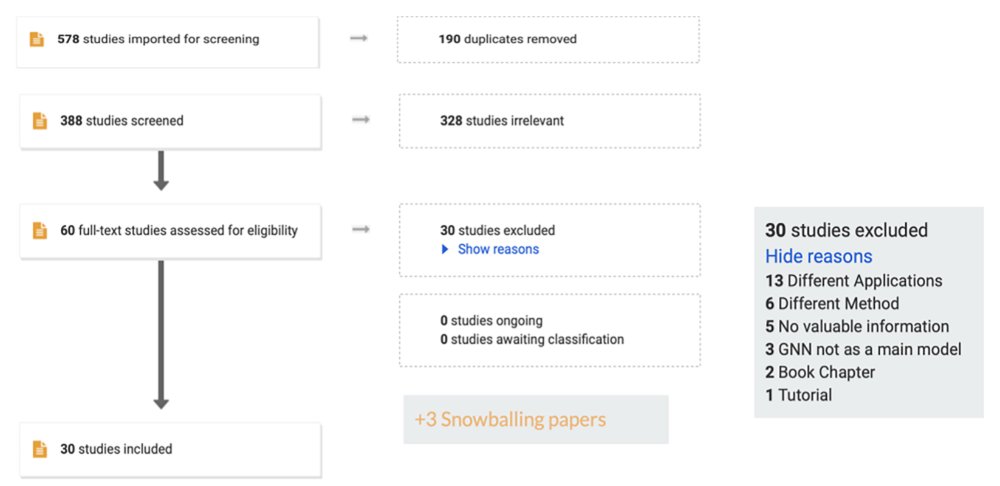
3.3 数据提取
在本研究的数据提取阶段，我们从入选论文中收集相关信息与数据，以回答研究问题。表 5 中通过全文 筛选收集到的信息，用于识别不同列之间的关系，并挖掘隐藏的洞见以回答研究问题。
对所考察的图神经网络，我们不仅记录了所用模型，还记录了输入数据、学习机制、性能和异常检测 方法。此外，还提取了金融领域与所用 GNN 的信息，记录了数据可得性与代码可得性信息。从初始 自动化检索中得到的其他信息，如发表年份和发表类型（期刊或会议），则用于识别发表趋势，因为 这些信息可以通过发表年份来分析。这一数据集合被用于回答我们关于当前 GNN 模型与潜在缺口的 两个研究问题。
| 数据类别 | 数据列 | 说明 | 提取的数据示例 |
|---|---|---|---|
| 发表数据 | 发表年份 | 发表年份 | 2019 至 2023 年 |
| 文献类型 | 文章发表于何处 | 期刊或会议 | |
| 学习机制 | GNN 模型 | 所应用的 GNN 模型 | GCN, GraphSage, GAT, etc. |
| 学习方法 | 训练方式 | 监督、半监督或无监督 | |
| 输入数据 | 图类型 | 输入图的类型 | 静态、时序或动态 |
| 异质性 | 结点或边的不同类型 | 同构或异质 | |
| 结点 | 结点表示什么 | 例如用户 | |
| 边 | 结点表示什么 | 例如共享收货地址、电话或设备、有连接的用户 | |
| 结点数 | 结点数量 | 例如 25,257 | |
| 边数 | 边数量 | 例如 50,422 | |
| 特征 | 结点或边特征 | 例如时间戳、比特币手续费和交易量 | |
| 异常数据 | 异常定义 | 什么算作异常 | 例如非法的比特币地址 |
| 异常层级 | 异常的层级 | 结点级或边级 | |
| 性能 | 性能 | GNN 模型性能 | Accuracy = %92.4 |
| 应用 | 金融领域 | 金融领域 | 税务、保险、银行等 |
| 可产出性 | 代码 | GitHub 链接 | github.com/WangXuhong CN/APAN |
| 数据集 | 数据集 | 数据来源 xblock.pro/Ethereum | |
| 访问 | 数据可得性 | 公开或私有 |
3.4 元分析
元分析是一种用于合并多项研究结果的统计方法。它有助于综合多项研究的发现，得出仅凭单项研究 无法得到的结论。本节用统计方法展示入选文章的主要考察结果，以呈现入选论文在年份上的分布以及 按发表类型的分布，如图 3 所示。
关于图神经网络用于金融欺诈检测这一主题的论文数量，逐年显著增长，说明该研究方向的关注度在 上升。这一趋势在 2019 年至 2023 年间尤为明显，表明这还是一个相对新兴的主题。此外，期刊论文 数量随时间增加，也说明该研究正在变得更加成熟，并在学术界获得认可。我们将在数据综合结果一节 中，基于最终确定的论文（47 篇）回答所定义的研究问题。
译注：此处原文写作“47 篇”，与 3.2.6 节得出的 33 篇以及表 9 的 33 行不一致，系原文笔误， 译文照录。
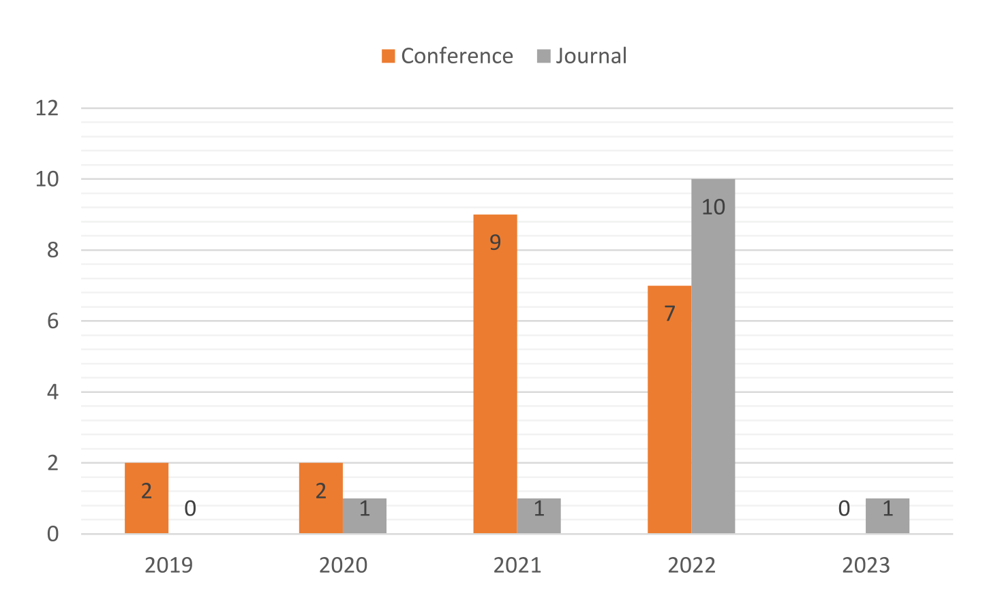
4 数据综合结果
数据综合结果一节详细分析两个研究问题的答案。第一个研究问题关注针对金融交易中的异常检测所 提出的图神经网络（GNN）类型。该节深入讨论不同类型的 GNN，包括图卷积网络（GCN）、图注意力 网络（GAT）等；同时考察这些 GNN 在不同金融欺诈数据集上的性能，以及相应的金融领域、数据来源、 可得性等相关细节。第二个研究问题考察使用 GNN 进行金融欺诈检测这一领域的当前趋势、缺口与 未来研究方向。该节对文献做全面分析，以识别该领域的新兴趋势、缺口与挑战，并提出应对已识别 缺口与挑战的潜在未来研究方向。
4.1 RQ1：应用于金融欺诈检测的图神经网络
GNN 已被以各种方式用于增强欺诈检测能力，从对复杂交易网络建模，到学习可疑活动的稳健表示。 通过在相连结点之间借助消息传递与图卷积传播信息，GNN 已被证明善于捕获那些区分合法金融行为 与欺诈行为所必需的情境与关系。
图神经网络（GNN）之所以被用于金融欺诈检测，是因为它们能够有效捕获金融网络中复杂且相互交织 的关系。相比传统方法与其他现有技术，GNN 在复杂关系建模上具有优势，因而特别适合金融领域的 欺诈检测。金融交易与金融活动构成具有大量相互依赖关系的复杂网络，GNN 可以通过在相连结点之间 传播信息，自然地处理这类复杂结构。这使 GNN 不仅能捕获直接连接，还能捕获高阶关系，从而对欺诈 模式给出更全面的视角。此外，GNN 具备学习数据非线性表示的能力，这在金融欺诈检测中至关重要， 因为欺诈行为未必遵循简单的模式。GNN 能够识别线性模型或基于规则的系统可能漏掉的细微且不显眼 的关系。
图神经网络可以借助金融交易与账户的图表示来检测金融欺诈。通过走一遍 GNN 用于检测洗钱相关欺诈 活动的例子，我们可以把这一概念讲清楚。在洗钱的例子中，每个账户成为图中的一个结点，账户之间 的交易构成有向边，边权为交易金额。图中包含交易金额、时间戳以及发送方与接收方账户的信息。 GNN 将被用于学习图中账户的结点嵌入。GNN 通过图传播信息，捕获账户之间的模式与关系。
GNN 能够检测可能指示洗钱的异常交易模式。例如，它可能识别出账户之间的交易环：资金以循环方式 不断转移，以掩盖资金来源。GNN 还能识别在交易量、交易频率或交易金额上行为异常的账户。显著偏离 合法账户典型行为的账户，可能引起洗钱嫌疑。
从聚类的角度看，GNN 会依据嵌入把相似账户聚在一起。具有相似交易模式的账户簇，可能指示潜在的 洗钱网络或洗钱实体。GNN 可以分析账户之间的资金流向，识别出那些频繁从大量彼此无关的账户接收 资金、随后又把这些资金转往其他看似无关账户的账户，这可能暗示洗钱活动。结合时间信息，GNN 还能 检测交易模式随时间的突变。交易量突然上升或交易去向发生变化，可能指示洗钱企图。
GNN 在金融欺诈检测中的性能通常以准确率、精确率、召回率、F1 分数和 ROC 曲线下面积（AUC-ROC） 来评测。在某些情形下，尤其当欺诈模式涉及账户之间错综复杂的关系或交互时，GNN 已展现出优于 传统机器学习模型或深度学习方法的性能。然而，GNN 的相对性能取决于金融图的规模、数据质量、 特征选择以及有标注数据的可得性等因素。在某些情况下，传统机器学习模型（例如逻辑回归、随机 森林）或深度学习方法（例如前馈神经网络、循环神经网络）仍可能表现得不相上下，尤其当数据不是 图结构、或图相对较小时。在实践中，把不同方法——包括 GNN、传统机器学习模型和深度学习技术—— 组合在一个集成框架中，往往能提升金融欺诈检测的整体性能。
文献中并没有一个统一的图神经网络模型分类方法。例如，Zhou et al.（2020）依据 GNN 的计算模块 （包括池化模块、传播模块和采样模块）来分类。Wu et al.（2021）把 GNN 分为循环式、卷积式、 图自编码器和时空 GNN。Y. Zhou et al.（2022）依据 GNN 的基础架构来分类，包括图卷积神经网络、 图池化算子、图注意力机制和图循环神经网络。
我们的综述提出了一种用于金融欺诈检测的图神经网络新分类体系，见图 4。我们考察了静态图中的 模型以及随时间变化的图（包括时序图和动态图）中的模型。基于对该领域现有文献的分析，我们把 模型分为四类：基于卷积的、基于注意力的、基于元路径的和基于 Transformer 的。这四类如下所述：
基于卷积的模型：这类 GNN 使用卷积运算，依据结点本身及其局部邻域的特征来更新结点表示。 它们是最基础的一类 GNN。
基于注意力的模型：这类 GNN 在卷积层之外引入注意力机制，为不同结点或边分配不同权重，使 模型能够学会聚焦于与任务更相关的特定结点或边，同时忽略无关信息。
基于元路径的模型：这类 GNN 使用元路径——即结点类型与边类型的序列——来捕获图结构的语义。 这类模型为 GNN 补充了领域特定知识，有助于生成更好的结点表示。
基于 Transformer 的模型：与基于元路径的模型相比，这类模型为 GNN 配备的是学习得到的元路径， 而不是预先定义好的路径。这类模型能够在学习有效结点表示的同时，识别原图中结点之间有价值的连接。
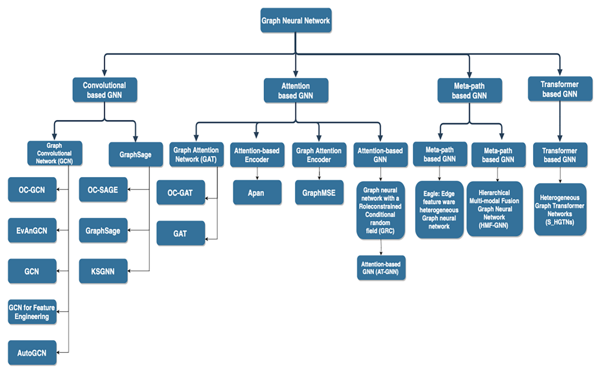
4.1.1 基于卷积的 GNN
基于卷积的图神经网络利用图卷积机制，这是图神经网络中最广泛使用的信息聚合技术之一。该机制 的基本思想是：在图结构上施加卷积运算，为每个结点提取更高层次的表示（图 5）。这类模型受卷积 神经网络（CNN）启发，但与结点顺序无关（Xiao et al., 2022）。
依据表 6 所呈现的结果，在静态图上用于金融欺诈检测的基于卷积的 GNN 有两类：图卷积网络（GCN） 和 GraphSAGE。
图卷积网络（GCN）
2016 年，Kipf 和 Welling 提出了图卷积网络（GCN）：它使用一种专门的卷积神经网络，借助图卷积 算子为图中各个结点学习特征表示。图卷积算子使网络能够聚合来自结点邻居的信息，从而学到对整体 图结构更复杂、信息量更大的表示（Kipf and Welling, 2017）。
这种多层图卷积网络（GCN）中的传播规则基于：
其中， 是带自连接的无向图 的邻接矩阵。 是单位矩阵，， 是第 层可训练的权重矩阵。 表示激活函数，例如 。 是第 层的激活矩阵；。
GraphSAGE
GraphSAGE（Sample and Aggregate，采样并聚合）是（Hamilton et al., 2017）提出的一种图卷积网络， 采用不同的采样与聚合方式。与图卷积网络（GCN）不同，GraphSAGE 的设计目标是让模型具备归纳能力， 能够处理此前未见过的结点。它通过同时利用结点的特征信息与结点局部邻域的结构属性，为每个结点 学习更高层的表示来实现这一点。
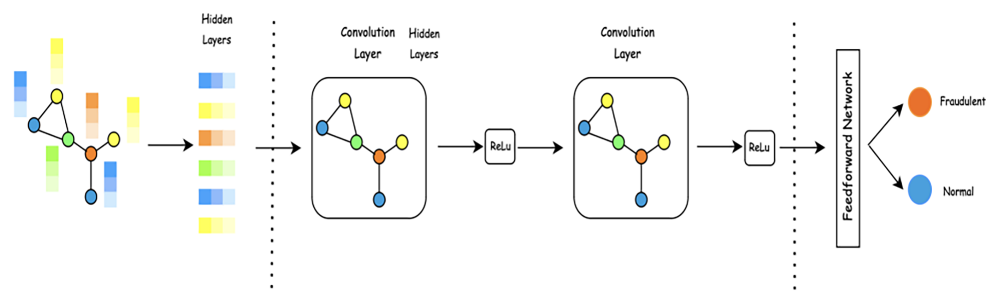
4.1.2 基于注意力的 GNN
基于注意力的 GNN 是一类利用注意力机制的 GNN，它使模型能够在消息传递过程中聚焦于图中最相关的 结点或边。在这类模型中，信息聚合的权重不是像图卷积网络那样固定，而是依据结点或边之间的相似度 动态学习得到。
图注意力网络（GAT）
图注意力网络（GAT）是 Velickovic et al.（2018）提出的一种特殊的基于注意力的 GNN，它作为一种 采用自注意力机制的神经网络架构，能够依据不同邻居对结点的重要性，有选择地聚合来自它们的 信息，从而更有效地对图数据中复杂的关系与依赖建模（Veličković et al., 2018）。每个结点的注意力 系数（）与隐状态（）的计算方式如下：
其中 是与线性变换相关的权重矩阵，作用于每个结点； 是单层 MLP 的权重向量（图 6）。
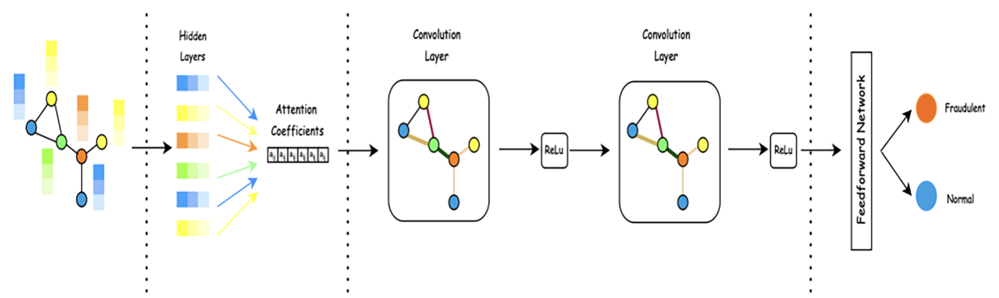
4.1.3 基于元路径的 GNN
基于元路径的图神经网络是处理异质图的一种独特方法，聚焦于不同类型结点与边之间的关系 （Sun et al., 2011）。为了定义元路径，先为异质图建立一个模式（schema），把其中的结点和边映射 到相应的对象类型；随后在这个新空间中定义一条路径，由此得到一条元路径。例如，在引文网络中， 可以把共同作者关系定义为一条元路径。在这一语境下，元路径是一串需要依次经过的结点与边，用以 连接两个所关注的结点（Yi Li et al., 2021）（图 7）。
在基于元路径的图神经网络中，结点嵌入依据与特定结点相关联的元路径实例来更新。这一过程使模型 能够捕获异质图中复杂的关系与模式，提升其分析与理解底层数据的能力。利用外生元路径，图神经网络 可以更有效地处理并从异质图中学习，而这类图往往包含多样且相互交织的信息。
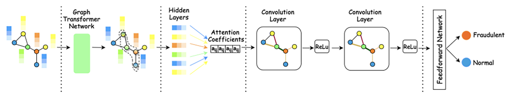
4.1.4 基于 Transformer 的 GNN
图 Transformer 网络（GTN）是一种专门为在异质图中学习结点表示而设计的图神经网络 （Yun et al., 2019）。与前面描述的基于元路径的 GNN 不同——后者侧重于依据特定的元路径实例更新 结点嵌入——GTN 提供了更灵活的异质图处理方式。它通过多个图 Transformer 层，把异质图变换为若干 由任意边类型和任意长度的元路径所定义的新图，以此实现这一点。
这些层协同工作，通过邻接矩阵的复合来学习新的图结构。这使 GTN 能够学习任意关于边类型和路径 长度的元路径，从而更全面地理解异质图中的关系。此外，GTN 被设计为既能学习短元路径、也能学习 长元路径（包括原始边），因而适合那些元路径长度多样且重要的应用（图 8）。
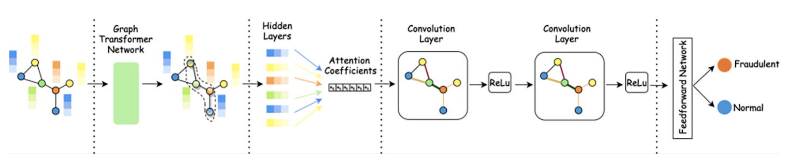
本文的表 6 给出了图神经网络（GNN）的分类，以及我们研究中评述的相应模型与参考文献。卷积类和 注意力类 GNN 等类别，比元路径类和 Transformer 类 GNN 得到了更多的探索；而图卷积网络、GraphSage 和图注意力网络等模型，即便以最简单的形式也被大量采用。
| GNN 类别 | GNN 模型 | 模型名称 | 参考文献 |
|---|---|---|---|
| 基于卷积的 GNN | 图卷积网络（GCN） | OC-GCN | (Patel et al., 2020) |
| EvAnGCN | (Patel et al., 2022) | ||
| GCN | (Tan, Tan, Zhang, & Li, 2021; Han et al., 2022; Li et al., 2022; Duan, Yan, Dong, Zhang, & Yu, 2022; Sergadeeva, Lavrova, & Zegzhda, 2022; Alarab et al., 2020; Reddy et al., 2021; Xia et al., 2022; Cheng et al., 2022; Chen et al., 2022; Singh et al., 2021; Wang et al., 2021) | ||
| GCN for Feature Engineering | (Jing et al., 2021; Fu, Yu, & Feng, 2022) | ||
| AutoGCN | (Lv et al., 2019) | ||
| GraphSage | OC-SAGE | (Patel et al., 2020) | |
| GraphSage | (Li et al., 2022; Han et al., 2022; Jing et al., 2021; Duan et al., 2022; Van Belle et al., 2020; Jing et al., 2019; Li et al., 2021; Van Belle et al., 2022) | ||
| Knowledge-Guided Semi-supervised Graph Neural Network (KS-GNN) | (Rao et al., 2021) | ||
| 基于注意力的 GNN | 图注意力网络（GAT） | OC-GAT | (Patel et al., 2020) |
| Graph Attention Network (GAT) | (Han et al., 2022; Liangguang et al., 2021; Zheng et al., 2022; Singh et al., 2021) | ||
| 基于注意力的编码器 | Apan: Asynchronous propagation attention network | (Wang et al., 2021) | |
| 图注意力编码器 | GraphMSE | (Zhou et al., 2022) | |
| 基于注意力的 GNN | Graph neural network with a Role-constrained Conditional random field (GRC) | (Xu et al., 2021) | |
| Attention-based GNN(AT-GNN) | (Tian et al., 2021) | ||
| 基于元路径的 GNN | 基于元路径的 GNN | Eagle: Edge feature Aware heterogeneous Graph neural network | (Shi et al., 2023) |
| 基于路径的图神经网络 | Hierarchical Multi-modal Fusion Graph Neural Network (HMF-GNN) | (Zhang et al., 2022) | |
| 基于 Transformer 的 GNN | 基于 Transformer 的 GNN | Heterogeneous Graph Transformer Networks (S_HGTNs) | (Liu et al., 2022) |
4.2 RQ2：当前趋势、缺口与未来研究方向
本节从多个角度回答研究问题：“使用图神经网络进行金融欺诈检测这一领域，当前的趋势、缺口与未来研究方向是什么？”具体而言，我们分析 GNN 在加密货币、在线支付交易、税务、医疗保险和信用卡等不同金融领域中的应用；考察以往研究使用的数据集及其所属金融领域、来源和可得性；并探讨异质图、学习机制、异常层级、异常比例以及基于 GNN 的金融欺诈检测中结点数与边数等因素。通过考察这些方面，我们旨在识别该领域的当前趋势、缺口与未来研究方向。
4.2.1 金融领域
金融欺诈检测是识别并阻止金融交易中欺诈活动的过程。欺诈检测方法包括基于规则的方法、机器学习与深度学习技术，其中也包括图神经网络。根据现有论文，我们把应用图神经网络的金融欺诈检测划分为五类：加密货币、信用卡、在线交易、税务和医疗保险。图 9 展示了本研究所评述论文在各金融领域中的比例。
在每个类别中，研究者依据不同的结点与边定义构建金融网络。各类别中的欺诈检测任务及目标也可能有明确差异。本节将阐述研究者如何定义各类别金融网络的不同组成部分，以及如何定义相应任务中的欺诈检测。更详细的信息见附录表 A2。
加密货币欺诈检测
加密货币欺诈检测是指使用各种技术与算法，识别并阻止加密货币交易中的欺诈活动。比特币和以太坊等加密货币已被广泛采用，因此也成为洗钱、盗窃和市场操纵等欺诈活动的目标。为应对这些活动，研究者与实践者开发了多种欺诈检测方法，包括基于图的方法、机器学习与深度学习技术。加密货币欺诈检测旨在保护投资者、预防市场操纵，并为所有加密货币用户营造安全、透明的金融环境。
欺诈交易可能危及区块链网络的安全，因此检测并阻止这类异常行为至关重要。本研究评述的论文中，超过 50% 聚焦于加密货币欺诈检测，特别是比特币与以太坊。它们对结点、边和欺诈的定义相似，我们将在此加以考察，以更深入地了解这些概念在加密货币语境中的定义。研究重心偏向加密货币，可能体现了它在金融行业中日益提高的重要性，以及该领域对有效欺诈检测技术的需求；也可能反映出，与其他金融领域相比，加密货币欺诈检测的数据更容易获得。
在大多数聚焦以太坊欺诈检测的论文中，图的结点是发送方和接收方的地址，代表账户；图的边是参与某笔交易的一对唯一发送方和接收方账户，表示两个结点之间的关系。这些图中的异常被定义为以太坊网络上的钓鱼账户或地址。
Patel et al. 对以太坊欺诈检测开展了两项研究，使用同一数据集。2020 年的研究聚焦静态图，2022 年的研究则考察动态图。两项研究都把地址定义为结点，把参与交易的一对唯一发送方和接收方账户定义为图的边。研究者将欺诈定义为行为偏离常态的异常地址或账户。
类似地，Tan et al.（2021）、Zhou et al.（2022）和 Li et al.（2021）在以太坊欺诈检测中也以相同方式定义结点、边和欺诈。相比之下，Liu et al.（2022）研究了以太坊中的欺诈性智能合约：结点表示账户、状态、gas 与手续费、交易和区块，边则表示异质图中结点间的关系。
在比特币欺诈检测研究中，通常把比特币交易表示为结点，把从付款方到收款方的资金流表示为边。多篇论文把比特币交易图中的非法交易定义为异常（Alarab, Prakoonwit, and Nacer 2020; Zheng, 2022; Li et al., 2022; Han et al., 2022; Singh et al., 2021）。相比之下，Liangguang and Zhen（2021）把匿名交易者表示为网络中的结点，每条边表示一笔匿名交易，并把欺诈定义为异常交易或边。Tian et al.（2021）将比特币地址定义为结点、将交易定义为边，并把异常定义为非法比特币地址。
信用卡欺诈检测
信用卡欺诈检测涉及识别与信用卡交易相关的欺诈活动。这是金融行业的一项关键任务，因为信用卡欺诈可能给持卡人和发卡机构都造成重大经济损失。人们使用过多种技术来检测信用卡欺诈，包括基于规则的系统、统计模型和机器学习算法。近年来，神经网络等深度学习方法以及基于图的方法也被用于信用卡欺诈检测。
Jing et al. 开展过两项信用卡欺诈检测研究，两项研究都把信用卡记录或客户定义为结点。不过，在 2019 年的研究中，边表示两个客户之间的相似程度；而在 2021 年的研究中，边则由网络中的一个 GNN 模型提取。Cheng et al. 的研究在一个网络中计算欺诈交易的概率，其中结点代表用户与商户，边代表用户与商户之间的连接。
Van Belle et al. 也提出过两篇信用卡欺诈检测论文。两者在交易的结点定义上有所不同：它们把商户与持卡人之外的交易也作为结点，以便在模型中纳入交易嵌入。边表示商户与持卡人经由交易结点形成的连接，异常则定义为欺诈性交易。Rao et al.（2021）与 Sergadeeva et al.（2022）的两项近期研究聚焦银行欺诈检测，采用了典型做法：结点表示信用卡用户，边表示用户的交易。其目标是通过分析交易模式、识别异常来检测欺诈用户。
在线支付交易欺诈检测
近年来，电子商务与在线支付系统兴起，身份盗窃、未经授权的交易和账户接管等欺诈活动随之增加。在线支付交易欺诈检测是识别并阻止在线支付交易中欺诈活动的过程。在大多数在线支付交易研究中，结点被定义为用户；不过，有两项异质图研究有所不同：Xu et al.（2021）把申请人、卖家、中介及其他用户作为结点，Reddy et al.（2021）则把用户和商户作为结点。
不同研究对边的定义各不相同：资金转移（Wang et al., 2021; Reddy et al., 2021）、申请人与其他用户之间的关系（Xu et al., 2021）、共享收货地址、电话号码或设备（Lv et al., 2019），以及从机构借款（Sergadeeva et al., 2022）。除 Wang et al.（2021）的研究外，各研究中的异常都可以是结点；在 Wang et al. 的研究中，每条边都有一个标签，用来表示该交互是否属于欺诈。此外，Xia et al. 的研究聚焦洗钱应用，其中结点表示交易，边表示不同交易之间有向的支付流；欺诈被定义为非法洗钱交易。
税务欺诈检测
税务欺诈检测是指运用数据分析与机器学习技术，识别从事税务相关欺诈活动的个人或公司。这类活动包括少报收入、虚报扣除项以及隐匿资产以逃避纳税。其目标是提高税务合规性、遏制欺诈行为，最终建立更公平、更有效的税收制度。
Shi et al.（2023）提出了一种面向逃税检测、能够感知边特征的异质图神经网络模型。图中的结点表示生产、投资者、事件和公司；边表示这些结点之间的各种关系，包括 CC、CP、PC、PP、CE、CI 和 II。其目标是检测涉及逃税的公司。
医疗保险欺诈检测
医疗保险欺诈检测是识别并阻止医疗保险理赔中欺诈活动的过程。要防止个人或组织实施欺诈、侵占医疗体系资源，这项工作十分重要。检测过程会分析多种数据来源，如病历、账单信息与患者信息，以识别可疑模式或行为。
Zhang et al.（2022）提出了一种医疗保险欺诈检测方法，在动态图异质图上采用分层多模态融合。图中包含索赔人、科室、医院、医疗服务和时间戳等结点，以及表示它们之间关系的边。该方法旨在识别欺诈性索赔人结点。另一方面，Chen et al.（2022）提出了一种带时空约束的图神经网络医疗保险欺诈检测方法。其图中包含患者、欺诈者、医院科室和药品等结点，以及表示它们之间关系的边，例如“患者-医院科室-药品-医院科室-患者”。该方法旨在检测欺诈患者。两篇论文都聚焦医疗保险领域的欺诈检测。
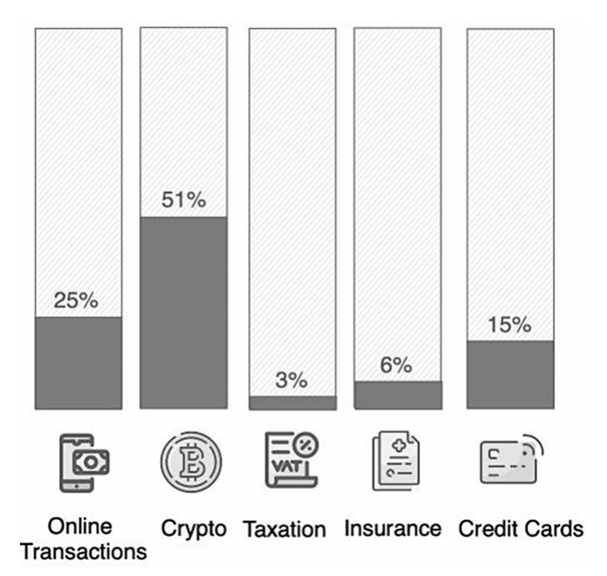
4.2.2 数据集
考察论文所使用的数据集并据此分类很有价值，因为研究所需的合适数据集一直难以获取，尤其是在金融领域，原因是金融数据具有机密性。考虑到这一难题，我们原本预计研究中会使用一些私有数据集，特别是在公开数据稀缺的税务等领域。然而，加密货币等领域的公开数据相对丰富。图 10 展示了所评述研究使用的各类数据集所占比例（图 11）。
欺诈检测研究使用两类数据集：真实数据集与合成数据集。真实数据集来自实际系统，合成数据集则人为生成，用于模拟真实数据的某些特征。所评述论文中，只有 10% 使用合成数据，其余 90% 使用真实数据集。
图数据集可以通过两种方式构建：第一，数据可以直接表示为由结点及其连接边构成的图，例如（Patel et al., 2022; J. Zhang et al., 2022）；第二，也可以从交易数据推导而来，即把金融交易转换为基于图的格式，例如（Van Belle et al., 2022; J. Zhou et al., 2022）。
在加密货币领域，文献中常用的数据集之一是 Bitcoin Elliptic 数据集⁶，可通过 Kaggle 获取。要检测加密货币欺诈，也可以从多个网站提取以太坊数据。例如，xblock.pro/Ethereum、etherscamdb.info/scams 和 etherscan.io 都是常见的数据来源。
Bitcoin Elliptic 数据集包含比特币区块链网络的交易数据，在 25 篇公开数据集论文中，有 7 篇使用它来检测欺诈与非法活动。在这张图中，交易表示为结点，两笔交易之间的比特币流表示为连接它们的边。每个结点有 166 个特征，并被标记为由“合法”“非法”或“未知”实体发起。
在保险领域，一个公开的医疗保险相关数据集通过竞赛⁷发布，并被用于图神经网络欺诈检测。该数据集中，结点表示医疗保险理赔流程中的实体，例如索赔人、科室、医院、医疗服务和时间戳。边表示这些实体间的关系，边类型集合定义为 R = {(claimer, department), (claimer, hospital), (claimer, health care), (claimer, timestamp)}。
银行数据方面，可用来源包括 GitHub 上发布的合成数据集⁸、私有真实数据，以及公开信用卡交易数据。公开数据的一个例子是 German Credit 数据集⁹，其中包含 1000 名信贷申请人的信息及其属性，例如职业、性别、年龄、储蓄账户、住房、信贷金额、支票账户、期限和用途。在该数据集中，结点表示客户，边表示两个客户之间的相似度。
由于隐私问题，在线交易研究常使用私有或合成数据集。不过，IEEE-CIS Fraud Detection 数据集¹⁰提供了公开的带标签数据，用以判断在线交易是否属于欺诈。该数据集把用户表示为结点，把交易表示为边，并包含付款金额、产品代码、支付卡信息、设备信息以及相关用户的网络连接信息等多种特征。
表 7 汇总了最常用的数据集，并按金融应用领域分类。表 8 列出了所评述论文的源代码可得性信息，包括论文名称及可用代码链接。有些论文没有公开源代码，另一些则提供了可访问代码的 GitHub 仓库。需要指出的是，所评述论文中只有约 15% 提供了源代码，这限制了研究的可复现性。
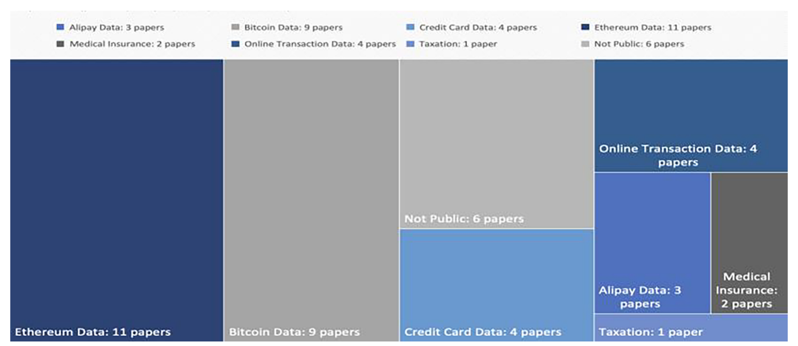
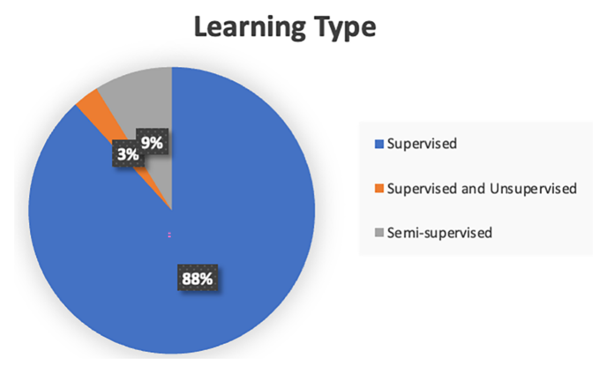
| 金融领域 | 数据集名称 | 来源 | 可得性 | 真实或合成 | 参考文献 |
|---|---|---|---|---|---|
| 税务 | TaxSH | 中国某地方税务局 | 不公开 | 真实 | (Shi et al., 2023) |
| 加密货币 | Bitcoin Elliptic Data | https://www.kaggle.com/ellipticco/elliptic-data-set | 公开可得 | 真实 | (Patel et al., 2022; Alarab et al., 2020; Zheng, 2022; Li et al., 2022; Han et al., 2022; Xia et al., 2022; Singh et al., 2021) |
| Bitcoin | https://github.com/JetQe/Bitcoin-network-illicit-addresses | 公开可得 | 真实 | (Tian et al., 2021) | |
| Bitcoin Alpha | http://www.btc-alpha.com | 公开可得 | 真实 | (Liangguang & Zhen, 2021) | |
| Ethereum | 以太坊公开黄皮书；https://etherscamdb.info/scams；https://etherscan.io/ | 公开可得 | 真实 | (Tan et al., 2021) | |
| Ethereum | https://www.kaggle.com/xblock/ethereum-phishing-transaction-network | 公开可得 | 真实 | (Li et al., 2021) | |
| Ethereum | xblock.pro/Ethereum | 公开可得 | 真实 | (Patel et al., 2020; Patel et al., 2022; Zhou et al., 2022; Duan et al., 2022) | |
| Ethereum | https://etherscan.io/ | 公开可得 | 真实 | (Li et al., 2022; Fu et al., 2022; Liu et al., 2022; Li et al., 2022; Li et al., 2022) | |
| 保险 | 医疗保险数据 | https://tianchi.aliyun.com/competition/entrance/231607/introduction | 公开可得 | 真实 | (Zhang et al., 2022) |
| 医疗保险数据 | 2018 年某市医疗保险局的私有数据 | 不公开 | 真实 | (Chen et al., 2022) | |
| 银行 | German Credit Data，UC Irvine Repository | https://archive.ics.uci.edu/ml/machine-learning-databases/statlog/german/ | 公开可得 | 真实 | (Jing et al., 2019) |
| Credit Card Data | https://github.com/Charlesvandamme/Inductive-Graph-Representation-Learning-for-Fraud-Detection/blob/master/Demo/demo_ccf.csv | 公开可得 | 合成 | (Van Belle et al., 2020; Van Belle et al., 2022) | |
| Credit Card Data | 某银行的私有数据 | 不公开 | 真实 | (Cheng et al., 2022) | |
| 在线支付交易 | CIS-Fraud Data | https://www.kaggle.com/c/ieee-fraud-detection/data | 公开可得 | 真实 | (Rao et al., 2021; Sergadeeva et al., 2022) |
| Online Purchase History | JD Finance Anti-Fraud 数据集 | 不公开 | 真实 | (Lv et al., 2019) | |
| Consumer Online Loan | Alipay 数据集 | 不公开 | 真实 | (Xu et al., 2021; Wang et al., 2021) | |
| Card Transaction Data | 由私有真实数据合成 | 不公开 | 合成 | (Reddy et al., 2021) | |
| Alipay | Alipay 网站数据集 | 不公开 | 真实 | (Wang et al., 2021) |
| 模型 | 链接 | 参考文献 |
|---|---|---|
| Apan: Asynchronous propagation attention network | https://github.com/WangXuhongCN/APAN | (Wang et al., 2021) |
| Ethident: Ethereum account identification framework | https://github.com/jjzhou012/Ethident | (J. Zhou et al., 2022) |
| EvAnGCN: Evolving Anomaly detection GCN | https://github.com/vatsalpatels/EvAnGCN_v1 | (Patel et al., 2022) |
| OCGNN: One-Class Graph Neural Network-based anomaly detection | https://github.com/vatsalpatels/Dataset_OCGNN | (Patel, Pan, and Rajasegarar, 2020) |
| Inductive Graph Representation Learning for fraud detection | https://github.com/Charlesvandamme/Inductive-Graph-Representation-Learning-for-Fraud-Detection | (Van Belle et al., 2022) |
4.2.3 图中的异质性
尽管许多真实金融系统涉及多个利益相关方、横跨不同领域，但现有文献并未充分处理对这类更大系统建模时产生的异质性。事实上，在使用图神经网络进行欺诈检测的研究中，只有约 30% 聚焦异质图；二分图作为异质图的一种也见于少数研究（Reddy et al., 2021; Van Belle et al., 2022），只有极少数研究（Shi et al., 2023）考察了边感知异质图。现有论文大多并未使用结点类型和边类型均完全异质的图，而更多使用结点类型不同的图。
在不同的异质图中，结点可以代表生产、投资者、事件和公司（Shi et al., 2023）；用户和商户（Cheng et al., 2022; Reddy et al., 2021; Van Belle et al., 2022; Van Belle, Mitrovic, and De Weerdt, 2020）；索赔人、科室、医院、医疗服务提供者和时间戳（J. Zhang et al., 2022）；或账户、状态、gas 与手续费、交易和区块（Liu et al., 2022）。这些图中的边可以表示其连接结点之间交互或关系的类型。
然而，随着金融系统不断扩大并日益互联，欺诈检测模型亟须能够有效处理包含多种结点类型与边类型的图。这类模型有望提升欺诈检测的泛化能力、可扩展性以及跨领域适用性。通过开发能够有效管理金融系统中异质图复杂性的图神经网络方法，研究者可以推动更稳健、更具适应性的欺诈检测方案，以应对金融欺诈不断演变的挑战。
4.2.4 随时间变化的图类型
根据预备知识部分的定义，按照图是否随时间变化，可以将图分为静态图、时序图和动态图三类。静态图的特征与结构随时间保持固定；时序图的特征会变化，但结点与边集合不变；动态图则会随时间变化，可能加入或移除新的结点与边。我们的文献综述显示，约 50% 的研究聚焦静态图，约 30% 考察时序图，其余约 20% 研究动态图。
这些发现表明，动态图还需要更多研究，因为许多金融问题都随时间变化。例如，金融交易本质上就是动态过程：人们持续地相互转账，新用户进入系统并参与交易，图结构也随之变化。在线交易与保险系统同样具有动态特征。忽视这些领域的时序与动态特性，可能导致欺诈检测算法只能依赖基于快照的图分析。开发能够承认问题动态本质、并适应动态图的欺诈检测模型至关重要，尤其是在大多数金融系统在线运行且持续演进的真实应用中。把金融系统的动态结构纳入图神经网络模型，能够显著提升欺诈检测的准确性与有效性，使系统在欺诈活动发生时更有力地实时响应。
4.2.5 学习机制
图神经网络可通过三种不同方式训练以进行异常检测：监督、半监督和无监督。监督设置提供带标签的数据用于训练。半监督设置使用少量带标签结点和大量无标签结点进行训练。相比之下，无监督设置只提供无标签数据，由模型自行识别模式。
在我们的系统性文献综述中，Shi et al.（2023）提出了唯一能够以无监督方式训练的框架。该论文使用基于元路径的 GNN 提取结点表示，并采用无监督训练损失进行异常检测，还提出了一种新的评测指标，用于比较无监督训练下的模型。
无监督设置更贴近真实欺诈检测场景，因为大量欺诈案件可能未被发现，系统因此需要具备识别新兴欺诈模式的能力。只依赖人工标注数据可能限制模型的泛化能力，使其面对真实数据时表现不佳。这凸显了开发面向无监督欺诈检测的端到端图神经网络方法的必要性。
4.2.6 结点级与边级异常检测
图的结点级异常检测涉及发现图中单个结点的异常行为或特征。相比之下，边级异常检测旨在识别图中边的异常行为或特征。根据我们的研究，只有 1% 的研究尝试了边级异常检测模型，其余研究都聚焦结点级异常检测。
结点与边的定义会随语境而变；在所评述的大多数论文中，结点并不一定代表边所表示的对象。例如，在 Wang et al.（2021）中，结点定义为用户，而边表示的实体是资金交易，两者并不对应。不过，在少数情况下（Van Belle et al., 2020; Xia et al., 2022），每笔结点间交易也被视为一个结点，以便将其嵌入纳入模型。
总体而言，本研究所评述的文献中，涉及边级异常检测的论文很少，不到 10%；没有论文涉及图级异常检测或图中异常社区的检测。这些异常类型在金融行业中很常见，例如洗钱或欺诈团伙；检测它们对金融安全可能具有重大意义。
4.2.7 异常比例
异常比例是指数据集中被标记为异常或欺诈的数据点所占比例。在异常检测中，目标是识别那些不符合大多数数据预期行为或模式的数据点。异常比例会随应用场景以及识别异常的容忍度而变化。图 12 显示，不同金融领域的异常比例各不相同；例如，信用卡或加密货币领域的异常比例高于医疗保险、税务或在线支付交易领域。
异常通常不是数据集中的常见现象，因为它们代表了不符合大多数数据预期行为或模式的数据点。所评述论文也证实了这一点：约 70% 的数据集异常比例低于 15%，约 45% 的数据集低于 2%。一些论文中的异常比例为 50%，因为它们平衡了欺诈数据与正常数据的数量，以解决平衡分类问题（Chen et al., 2022; Duan et al., 2022; Y. Li et al., 2021）。常用的 Elliptic 数据集（https://www.kaggle.com/datasets/ellipticco/elliptic-data-set）的异常比例固定为 2%，这解释了为什么许多论文使用这一确切比例。
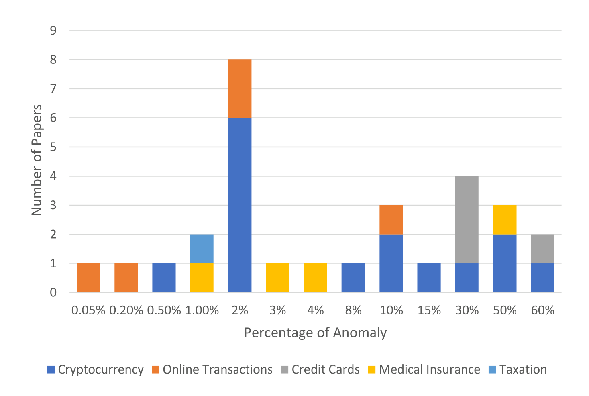
4.2.8 结点数与边数
本节依据结点数与边数考察不同数据集。图 13 全面展示了金融欺诈检测所用图数据集中的结点数与边数。中央直方图显示每个数据集结点数与边数的分布，轴上的箱线图则进一步揭示这些分布的信息，包括中位数与离群值。横轴表示结点数，纵轴表示边数。数据集按各自的金融领域着色，便于跨领域比较与分析。颜色深浅对应每个区间中的数据集频次，清晰呈现数据集的分布情况。
这一分布的样本量相对较小，有些领域只有一个数据集，如表中所示。从图中可以看出，结点数、边数以及平均结点度数都存在明显差异；这些指标近似反映了加密货币与在线交易数据集中的图结构。这种多样性使该领域的欺诈检测模型可以在小图与大数据集上进行测试，以评估其可扩展性。不过，税务数据集只有一个，因此不能对税务领域得出相同结论。
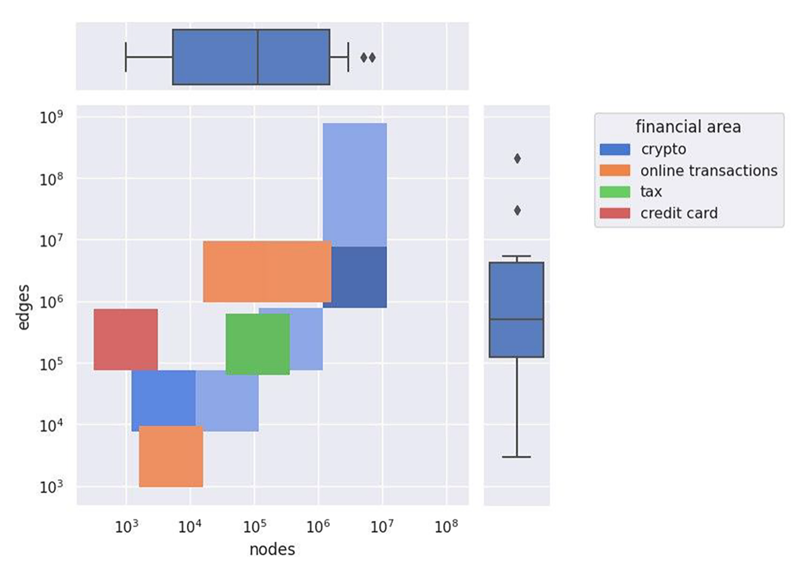
4.2.9 研究缺口与未来方向
我们的系统综述识别出的一个重要研究缺口，是对无监督学习关注有限，尽管它在真实欺诈检测场景中具有潜在优势，也很实用。在实践中，带标签数据往往稀缺，而识别新颖、未见过的欺诈模式至关重要。无监督学习为这些挑战提供了有前景的解决方案，因为它无需带标签数据也能有效工作，并可检测此前未观察到的模式。此外，我们发现文献中缺乏端到端无监督 GNN 模型。作为未来研究方向，我们建议优先开发并评估无监督及端到端无监督 GNN 模型，因为它们有望显著增强欺诈检测能力。
另一个研究缺口是对动态图的研究不足，尤其是在边与结点作为连续数据流不断加入图中的在线场景。尽管有一项研究处理了动态图欺诈检测，但它并未聚焦在线欺诈检测，而在线检测是许多应用（如在线交易）的常见需求。此外，还没有研究探索使用跨领域异质图进行金融欺诈检测。弥补这些缺口为未来研究提供了机会。开发能够在在线场景中高效处理动态图的 GNN 模型，并研究跨领域异质图的潜力，可显著推动金融欺诈检测领域的发展，并拓宽其在不同金融领域中的适用性。
| 序号 | 筛选出的论文 | 异质性 | 图类型 | 学习机制 | 异常层级 | ||||||
|---|---|---|---|---|---|---|---|---|---|---|---|
| 同构 | 异质 | 静态 | 时序 | 动态 | 监督 | 半监督 | 无监督 | 结点级 | 边级 | ||
| 1 | (Patel et al., 2020) | ✓ | ✓ | ✓ | ✓ | ||||||
| 2 | (Patel et al., 2022) | ✓ | ✓ | ✓ | ✓ | ||||||
| 3 | (Wang et al., 2021) | ✓ | ✓ | ✓ | ✓ | ||||||
| 4 | (Shi et al., 2023) | ✓ | ✓ | ✓ | ✓ | ✓ | |||||
| 5 | (Tan et al., 2021) | ✓ | ✓ | ✓ | ✓ | ||||||
| 6 | (Liangguang & Zhen, 2021) | ✓ | ✓ | ✓ | ✓ | ||||||
| 7 | (Alarab et al., 2020) | ✓ | ✓ | ✓ | ✓ | ||||||
| 8 | (Zheng, 2022) | ✓ | ✓ | ✓ | ✓ | ||||||
| 9 | (Reddy et al., 2021) | ✓ | ✓ | ✓ | ✓ | ||||||
| 10 | (Li et al., 2022) | ✓ | ✓ | ✓ | ✓ | ||||||
| 11 | (Zhou et al., 2022) | ✓ | ✓ | ✓ | ✓ | ||||||
| 12 | (Li et al., 2021) | ✓ | ✓ | ✓ | ✓ | ✓ | |||||
| 13 | (Zhang et al., 2022) | ✓ | ✓ | ✓ | ✓ | ||||||
| 14 | (Tian et al., 2021) | ✓ | ✓ | ✓ | ✓ | ✓ | |||||
| 15 | (Han et al., 2022) | ✓ | ✓ | ✓ | ✓ | ||||||
| 16 | (Xia et al., 2022) | ✓ | ✓ | ✓ | ✓ | ||||||
| 17 | (Jing et al., 2021) | ✓ | ✓ | ✓ | ✓ | ||||||
| 18 | (Cheng et al., 2022) | ✓ | ✓ | ✓ | ✓ | ||||||
| 19 | (Li et al., 2022) | ✓ | ✓ | ✓ | ✓ | ||||||
| 20 | (Rao et al., 2021) | ✓ | ✓ | ✓ | ✓ | ||||||
| 21 | (Chen et al., 2022) | ✓ | ✓ | ✓ | ✓ | ||||||
| 22 | (Xu et al., 2021) | ✓ | ✓ | ✓ | ✓ | ||||||
| 23 | (Fu et al., 2022) | ✓ | ✓ | ✓ | ✓ | ||||||
| 24 | (Duan et al., 2022) | ✓ | ✓ | ✓ | ✓ | ||||||
| 25 | (Liu et al., 2022) | ✓ | ✓ | ✓ | ✓ | ||||||
| 26 | (Van Belle et al., 2022) | ✓✓ | ✓ | ✓ | ✓ | ||||||
| 27 | (Van Belle et al., 2020) | ✓ | ✓ | ✓✓ | ✓ | ||||||
| 28 | (Singh et al., 2021) | ✓ | ✓ | ✓ | ✓ | ||||||
| 29 | (Jing et al., 2019) | ✓ | ✓ | ✓ | ✓ | ✓ | |||||
| 30 | (Lv et al., 2019) | ✓ | ✓ | ✓ | ✓ | ||||||
| 31 | (Sergadeeva et al., 2022) | ✓ | ✓ | ✓ | ✓ | ✓ | |||||
| 32 | (Wang et al., 2021) | ✓ | ✓ | ✓ | ✓ | ||||||
| 33 | (Li et al., 2022) | ✓ | ✓ | ✓ | ✓ | ||||||
5 有效性威胁与局限
我们设计本系统综述及其方法，尽可能确保构念有效性、内部有效性与外部有效性，同时回答研究问题。不过，本研究仍存在以下局限与有效性威胁：
- 检索式的局限：检索式可能未包含所有相关论文；例如，有些论文可能在标题、摘要或关键词中使用“network”而非“graph”。虽然加入“network”可能检出更多论文，但检索结果也会急剧增加大量不相关文献。
- 未经同行评审的文章：本综述依赖同行评审文献，不纳入灰色文献。因此，它可能无法反映行业中正在发生的情况，这也是一项限制。此外，该领域发展迅速，许多研究者倾向于在研究早期就通过预印本（如 arXiv）发表论文。
- 泛化性：就泛化性而言，我们预计本研究的成果，尤其是 GNN 模型，可以用于任何涉及金融欺诈检测的研究；GNN 模型也可以应用于其他任务。不过，由于这些技术的性能高度依赖所采用的数据来源，因此可能并不适用于所有情形。
6 结论
在本系统性文献综述中，我们依据既定的纳入与排除标准以及质量评估标准，全面考察了现有文献并识别出相关论文。我们的发现有助于深入理解针对金融交易异常检测而提出的图神经网络类型，以及该领域的当前趋势、缺口与未来研究方向。
我们提出了一种面向金融欺诈检测的 GNN 新分类体系，可为研究者与实践者提供有价值的参考。对当前趋势与缺口的分析表明，动态图与异质图，尤其是跨领域应用，仍需进一步探索。我们还指出，某些领域（例如税务）中多样化图数据集的可得性有限，并注意到房地产和抵押贷款等金融领域尚未得到充分研究。
尽管我们评述的大多数论文采用监督方法进行欺诈检测，但我们主张更广泛地研究无监督与半监督方法。这些方法更实用，也更贴近真实场景，因为它们有望揭示此前未见的模式。本系统综述可作为一份最新参考资料与研究基础，供研究者和实践者据此推进基于图神经网络的金融欺诈检测领域。
附录
评价指标
| 评价指标 | 公式／说明 |
|---|---|
| 准确率 | |
| 精确率 | |
| 召回率 | |
| F1 分数 | |
| AUC-ROC | ROC 曲线下面积 |
| AUC-AP | 精确率-召回率曲线下面积 |
结点与边相关特征
| 筛选出的论文 | 欺诈定义 | 结点 | 边 | 异常比例 | 结点数 | 边数 | 特征数 | 特征示例 |
|---|---|---|---|---|---|---|---|---|
| (Patel et al., 2020) | 与以太坊攻击相关的交易 | 发送方与接收方地址，即账户 | 发送方与接收方的唯一配对集合 | 36% | 25,257 | 50,422 | 34 | 区块编号、时间戳、交易哈希、发送地址、接收地址、金额、gas 价格、gas 上限、gas 已用量等 |
| (Patel et al., 2022) | 异常地址 | 地址 | 地址之间的连接 | — | — | — | 34 | 交易金额、交易数量、平均交易额、聚类系数等 |
| (Wang et al., 2021) | 欺诈性交易 | 用户 | 资金转移 | — | 761,750 | 2,776,009 | 101 | — |
| (Shi et al., 2023) | 逃税公司 | 生产、投资者、事件和公司 | CC、CP、PC、PP、CE、CI、II（P：生产，I：投资者，E：事件，C：公司） | 0.90% | 112,015 | 198,903 | 24 | 生产代码、教育程度、出生地、年龄、地址、事件描述、行业、注册类型、业务范围 |
| (Tan et al., 2021) | 在以太坊上参与欺诈交易的交易地址 | 地址 | 一对地址之间的交易 | 61% | 3,041 | — | 2 | 总收入或支出金额，以及交易金额占交易总金额的比例 |
| (Liangguang & Zhen, 2021) | 检测欺诈交易 | 交易者 | 交易 | — | 3,783；5,881 | 24,186；35,592 | 1 | 每条边都标有交易时间 |
| (Alarab et al., 2020; Zheng, 2022; Li et al., 2022; Tian et al., 2021; Han et al., 2022; Xia et al., 2022; Singh et al., 2021) | 比特币交易图中的非法交易 | 比特币交易 | 从付款方到收款方的资金流 | 2% | 203,769 | 234,355 | 166 | 时间戳、比特币手续费、交易量、输入／输出收到或支出的平均 BTC、最大值、最小值、标准差与相关系数 |
| (Reddy et al., 2021) | 卡交易数据集中的欺诈交易 | 用户与商户 | 用户与商户之间的交易 | 0.05% | 62,000 | 4,000,000 | — | 时序特征与结构特征 |
| (Li et al., 2021) | 钓鱼账户 | 账户 | 以太坊支付 | 50% | 1,329,729 | 2,161,573 | — | — |
| (Zhang et al., 2022) | 欺诈性索赔人 | 索赔人、科室、医院、医疗服务、时间戳 | 索赔人与科室、医院、医疗服务、时间戳之间的关系 | 17% | 2,973,489 | 5,355,155 | — | 结点具有上下文特征，例如年龄、性别和医疗支出 |
| (Jing et al., 2021) | 欺诈性信用卡 | 信用卡记录 | 记录之间的连接 | 30% | 1,000 | — | 24 | 每条记录包括职业、性别、年龄等类别型或符号型特征 |
| (Cheng et al., 2022) | 欺诈交易概率 | 用户与商户 | 用户与商户之间的连接 | — | 2,181 | 235,706 | — | — |
| (Li et al., 2022) | 钓鱼账户 | 账户 | 带时间戳与金额信息的交易 | 12% | 1,686,003 | 4,380,616 | — | 根据交易频率信息构造的结点特征矩阵 |
| (Rao et al., 2021) | 欺诈用户 | 卡 | 交易 | — | — | — | — | 卡特征（如信贷金额）；交易特征（如交易类型或金额） |
| (Chen et al., 2022) | 欺诈患者 | 患者、欺诈者、医院科室、药品 | 患者-医院科室-药品-医院科室-患者等关系 | 50%；1% | 3,827；8,480 | — | — | 就诊间隔平均值、多家医院比例、个人总支出、基金支出、个人就诊次数 |
| (Xu et al., 2021) | 欺诈贷款 | 申请人、卖家、中介及其他用户 | 申请人与其他用户之间的关系 | — | — | — | — | 申请人属性，如用户资料、交易汇总信息和申请时间；申请人的四种不同关系 |
| (Fu et al., 2022) | 钓鱼账户 | 地址（或账户） | 地址之间的交易 | 0.50% | — | — | — | 交易金额、手续费、交易次数与交易时间 |
| (Duan et al., 2022) | 钓鱼账户 | 地址（或账户） | 地址之间的交易 | 50% | 3,360 | — | — | — |
| (Liu et al., 2022) | 智能合约异常检测 | 账户、状态、gas 与手续费、交易和区块 | 结点之间的关系 | 8% | — | — | — | 账户特征用于描述欺诈性智能合约；代码特征为智能合约源代码的向量化表示 |
| (Van Belle et al., 2022) | 欺诈性交易 | 客户、商户与交易结点 | 交易 | 0.65% | — | 3,724,348 | — | 商户类别代码、国家、金额、时间、受理情况 |
| (Van Belle et al., 2020) | 欺诈性交易 | 商户、持卡人与交易 | 通过交易结点连接商户与持卡人 | 0.38% | 4,610,369 | — | — | 时间戳、交易金额、商户国家与类别 |
| (Jing et al., 2019) | 根据属性将每条记录分类为信用风险好或坏 | 客户 | 客户两两之间的相似度 | 30% | 1,000 | 499,500 | — | 职业、性别、年龄、储蓄账户、住房、信贷金额、支票账户、期限和用途 |
| (Lv et al., 2019) | 根据用户购买历史信息识别欺诈用户 | 用户 | 共享收货地址、电话号码或设备的用户之间建立连接 | 10% | 5,014 | 3,000 | — | 用户特征向量包含 1000 个商品类别的购买历史 |
| (Sergadeeva et al., 2022) | 欺诈用户 | 用户 | 交易 | — | — | — | — | 交易金额、产品代码、支付卡信息、用户网络连接信息 |
| (Wang et al., 2021) | 从 Alipay 平台借款且无法按时还款的用户 | 用户 | 表示用户从机构借款的边 | 2% | 5,000,000 | 30,000,000 | 553 | 金额、余额、状态、贷款用途、借款时间、婚姻状况、行业 |
| (Li et al., 2022) | 钓鱼地址 | 地址 | 地址之间的交易 | 约 10% | 6,844,050 | 208,847,461 | — | 交易方向、金额与时间信息，以及统计、结构和交易特征 |